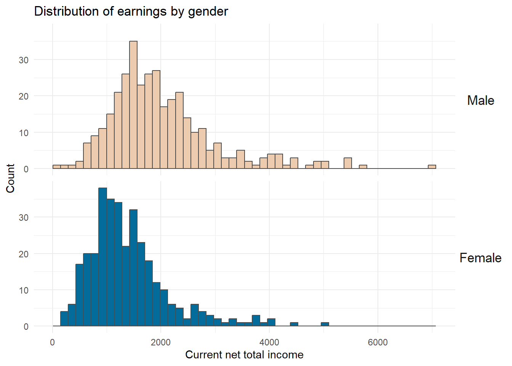
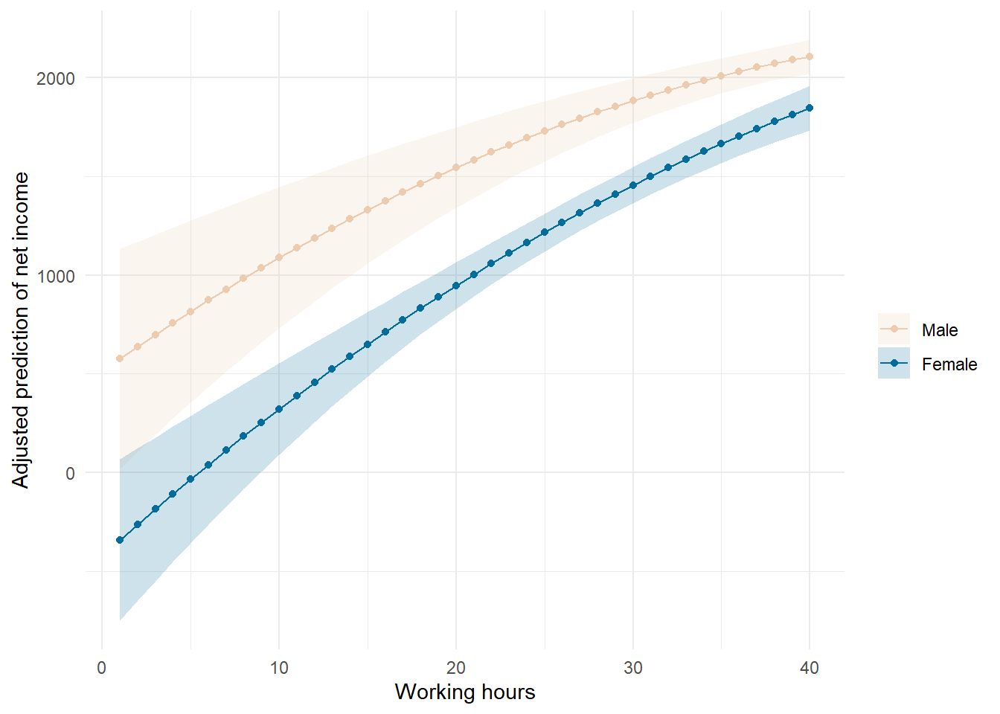

label lan en
save, replace8 From data to table & graph
This is a sample analysis starting from the ‘raw’ PASS Campus File to a Word-Dokument containing the tables and graphs from a regression analysis.
Does the gender difference in earnings differ by hours worked?
I have opened the PENDDAT_cf_W13.dta once in Stata and set:
Everything is based on a tidyverse-approach:
library(tidyverse)
library(haven)8.1 Exploring the variables
First, we explore the variables available in the data set based on their variable labels (attributes(...)$label)
pass_df <- read_dta("./orig/PENDDAT_cf_W13.dta", n_max = 1) # load the first row onlyThis gives us one variable label:
attributes(pass_df$pnr)$label[1] "Constant person number"attributes(pass_df$welle)$label[1] "Survey wave indicator"Get all variable labels, we loop over all variables using map() and store the result in var_lab:
var_lab <-
pass_df |> # call data.frame
map(~attributes(.x)$label) |> # apply attributes to all variables (take the entire input)
unlist() |> # turn list into vector
enframe() # turn the vector into a data.frame
head(var_lab)# A tibble: 6 × 2
name value
<chr> <chr>
1 pnr Constant person number
2 hnr Household number (current)
3 welle Survey wave indicator
4 pintjahr Date of person interview: Year, gen.
5 pintmon Date of person interview: Month, gen.
6 pintmod System variable: Mode of person interviewWe’re looking for variables for income, education, age, gender, and hours worked. Do find the corresponding variables, we can filter through the var_lab data.frame using grepl("pattern", variable):
var_lab |> filter(grepl("income",value))# A tibble: 3 × 2
name value
<chr> <chr>
1 PAS1400b Acceptable disadvantage: Low income
2 netges Current net total income, without mini-job, incl. categorized data, …
3 brges Current gross total income, without mini-job, incl. categorized data…var_lab |> filter(grepl("time",value))# A tibble: 5 × 2
name value
<chr> <chr>
1 PEO0900a Attitude towards fulltime childcare outside house: From what age onw…
2 PEO0900b Attitude towards fulltime childcare outside house: From what age onw…
3 PQB0600a Opportunities/pressures at work: Often great time pressure
4 PAS1400a Acceptable disadvantage: Long commuting time
5 azges1 Current contract working time,total, without mini-job, gen. To search for multiple variables, we can use grepl("pattern", variable) in combiation with the | (or) operator:
# var_lab |> filter(grepl("income|school| Age | age |gender|working time",value)) # basic syntax
var_lab |> filter(grepl("income|school|[A,a]ge |gender|working time",value)) # using regex # A tibble: 18 × 2
name value
<chr> <chr>
1 palter Age (W1: gen. from P1; W2 ff.: best info.), gen.
2 PSM0100 Usage of social networks
3 PEO0800a Attitude towards childcare outside house: From what age onwards (mo…
4 PEO0800b Attitude towards childcare outside house: From what age onwards (ye…
5 PEO0900a Attitude towards fulltime childcare outside house: From what age on…
6 PEO0900b Attitude towards fulltime childcare outside house: From what age on…
7 PEO1000a Attitude: Mother take up employment(>15h): From what age onwards (m…
8 PEO1000b Attitude: Mother take up employment(>15h): From what age onwards (y…
9 PEO1100a Attitude: Mother take up employment(>30h): From what age onwards (m…
10 PEO1100b Attitude: Mother take up employment(>30h): From what age onwards (y…
11 PQB0600j Opportunities/pressures at work: Salary or wage is appropriate
12 PAS1400b Acceptable disadvantage: Low income
13 PG1270 Average number of cigarettes smoked per day (last week)
14 epartner Control variable: Marriage partner or registered partner in HH
15 schul2 Highest school qualification, incl. foreign, +open
16 netges Current net total income, without mini-job, incl. categorized data,…
17 brges Current gross total income, without mini-job, incl. categorized dat…
18 azges1 Current contract working time,total, without mini-job, gen. 8.2 Loading data
The we load the PASS data, apply a filter right away to drop missing values and keep wave 13 only. In second step, we keep only necessary variables:
pass_df <- read_dta("./orig/PENDDAT_cf_W13.dta") |>
filter(netges > 0,palter > 0, schul2 > 0,azges1>0, welle == 12) |>
select(netges, palter, schul2, azges1, welle, zpsex)Next, we explore the categorial schul2 variable:
pass_df |> count(schul2)# A tibble: 6 × 2
schul2 n
<dbl+lbl> <int>
1 2 [Finished school without degree] 18
2 3 [School incorporating physically or mentally disabled children (Sonde… 4
3 4 [Lower secondary school (Hauptschulabschluss)] 117
4 5 [Intermediate secondary school (Realschulabschluss, Mittlere Reife)] 259
5 6 [Upper secondary Fachoberschule, Fachhochschulreife)] 56
6 7 [General/subject-specific upper secondary school (Hochschulreife)] 226pass_df |> count(zpsex)# A tibble: 2 × 2
zpsex n
<dbl+lbl> <int>
1 1 [Male] 348
2 2 [Female] 3328.3 Preparing variables
To have nice short and informative labels, we define both variables as factors. We combine 6 [Upper secondary Fachoberschule, Fachhochschulreife)] and 7 [General/subject-specific upper secondary school (Hochschulreife)] into “Upper Secondary”:
pass_df <-
pass_df |>
mutate(
gender = factor(zpsex, levels = 1:2, labels = c("Male","Female")) ,
educ = factor(schul2, levels = 2:7,
labels = c("No degree","Special education","Lower secondary",
"Intermediate secondary", "Upper secondary",
"Upper secondary") )
)Checking the recodes relies using count():
pass_df |> count(gender,zpsex)# A tibble: 2 × 3
gender zpsex n
<fct> <dbl+lbl> <int>
1 Male 1 [Male] 348
2 Female 2 [Female] 332pass_df |> count(educ,schul2)# A tibble: 6 × 3
educ schul2 n
<fct> <dbl+lbl> <int>
1 No degree 2 [Finished school without degree] 18
2 Special education 3 [School incorporating physically or mentally d… 4
3 Lower secondary 4 [Lower secondary school (Hauptschulabschluss)] 117
4 Intermediate secondary 5 [Intermediate secondary school (Realschulabsch… 259
5 Upper secondary 6 [Upper secondary Fachoberschule, Fachhochschul… 56
6 Upper secondary 7 [General/subject-specific upper secondary scho… 2268.4 Create descriptions
To create descriptions for our variables.
8.4.1 Description of income variable
A histogram for
library(wesanderson) # for colors from Wes Anderson movies
wesanderson::wes_palettes$Darjeeling2[1:2] # the package contains hex-codes lists - we'll go for Darjeeling2[1] "#ECCBAE" "#046C9A"# save it as an object
inc_hist <-
pass_df |>
ggplot(aes(netges, fill = gender)) +
geom_histogram(position = position_dodge(),bins = 50, color = "grey30", size = .1) +
scale_fill_manual(values = wesanderson::wes_palettes$Darjeeling2[1:2]) +
facet_grid(gender~.) + # split panel by gender
labs(x = "Current net total income", y = "Count",
fill = "", color = "",
title = "Distribution of earnings by gender") +
theme_minimal()+
guides(fill = "none", color = "none") +
theme(strip.text.y = element_text(angle = 0,size = rel(1.5)))
inc_histIgnoring unknown labels:
• colour : ""
# export plot
ggsave(plot = inc_hist,filename = "./results/Fig01_Histogramm.png")Saving 7 x 5 in image
Ignoring unknown labels:
• colour : ""8.4.2 Continuous independent variables
For the continuous independent variables, we create a summary table.
To have it all in one table, pivot_longer() is helpful:
## just to illustrate what pivot_longer does here:
pass_df |>
select(palter, azges1,gender) |> # retain only variables palter, azges1, gender
pivot_longer(cols = -gender) |> # reshape variables except gender to long shape
head(n=2) # only show lines 1-2# A tibble: 2 × 3
gender name value
<fct> <chr> <dbl+lbl>
1 Female palter 34
2 Female azges1 24 # store for later:
cont_desctab <-
pass_df |>
select(palter, azges1,gender) |>
pivot_longer(cols = -gender) |>
summarise(MEAN = mean(value),
SD = sd(value),
MIN = min(value),
MAX = max(value),
.by = c("gender","name"))
cont_desctab # quick look# A tibble: 4 × 6
gender name MEAN SD MIN MAX
<fct> <chr> <dbl> <dbl> <dbl+lbl> <dbl+lbl>
1 Female palter 44.9 11.2 20 65
2 Female azges1 30.3 10.3 3 74
3 Male palter 42.6 11.1 19 65
4 Male azges1 37.5 7.98 2 64 And then we create a frequency table for educ. We store it for later formatting:
desc_tab <-
pass_df |>
select(educ,gender) |>
count(educ,gender) |>
mutate(pct = prop.table(n)*100, # to have it as percent
pct = sprintf("%.2f",pct), # format number -> 2 digits
pct = paste0(pct,"%"),
.by = gender)
desc_tab # check# A tibble: 9 × 4
educ gender n pct
<fct> <fct> <int> <chr>
1 No degree Male 14 4.02%
2 No degree Female 4 1.20%
3 Special education Male 4 1.15%
4 Lower secondary Male 64 18.39%
5 Lower secondary Female 53 15.96%
6 Intermediate secondary Male 113 32.47%
7 Intermediate secondary Female 146 43.98%
8 Upper secondary Male 153 43.97%
9 Upper secondary Female 129 38.86%8.5 Fit regression models
We fit two regression models:
mod1 <- lm(netges~ gender*azges1+ I(azges1^2), data = pass_df)
summary(mod1)
Call:
lm(formula = netges ~ gender * azges1 + I(azges1^2), data = pass_df)
Residuals:
Min 1Q Median 3Q Max
-1820.0 -519.7 -120.2 293.1 5139.3
Coefficients:
Estimate Std. Error t value Pr(>|t|)
(Intercept) 517.3962 303.3108 1.706 0.08850 .
genderFemale -835.1715 255.2593 -3.272 0.00112 **
azges1 59.8497 14.9688 3.998 7.08e-05 ***
I(azges1^2) -0.5025 0.2070 -2.427 0.01547 *
genderFemale:azges1 14.0308 7.0818 1.981 0.04797 *
---
Signif. codes: 0 '***' 0.001 '**' 0.01 '*' 0.05 '.' 0.1 ' ' 1
Residual standard error: 819.7 on 675 degrees of freedom
Multiple R-squared: 0.2422, Adjusted R-squared: 0.2377
F-statistic: 53.94 on 4 and 675 DF, p-value: < 2.2e-16mod2 <- lm(netges~ palter + I(palter^2) + educ + gender*azges1 + I(azges1^2), data = pass_df)
summary(mod2)
Call:
lm(formula = netges ~ palter + I(palter^2) + educ + gender *
azges1 + I(azges1^2), data = pass_df)
Residuals:
Min 1Q Median 3Q Max
-1930.1 -470.7 -87.7 344.2 4433.9
Coefficients:
Estimate Std. Error t value Pr(>|t|)
(Intercept) -877.63869 533.77509 -1.644 0.10060
palter 15.16374 20.71663 0.732 0.46445
I(palter^2) 0.01347 0.23751 0.057 0.95478
educSpecial education 245.59507 437.68450 0.561 0.57490
educLower secondary 403.80108 193.80535 2.084 0.03758 *
educIntermediate secondary 580.82538 187.81755 3.092 0.00207 **
educUpper secondary 1032.23670 187.05171 5.518 4.89e-08 ***
genderFemale -972.95869 247.57879 -3.930 9.38e-05 ***
azges1 63.21451 14.50979 4.357 1.53e-05 ***
I(azges1^2) -0.58616 0.19693 -2.976 0.00302 **
genderFemale:azges1 16.84689 6.79861 2.478 0.01346 *
---
Signif. codes: 0 '***' 0.001 '**' 0.01 '*' 0.05 '.' 0.1 ' ' 1
Residual standard error: 762.3 on 669 degrees of freedom
Multiple R-squared: 0.3505, Adjusted R-squared: 0.3408
F-statistic: 36.1 on 10 and 669 DF, p-value: < 2.2e-168.6 Regression summaries
8.6.1 Regression table
We use the {modelsummary} package to create a regression table. We save the regression table as flextable object using output = "flextable" for additional formatting using the {flextable} package later.
library(flextable)
library(modelsummary)
# set flextable defaults
set_flextable_defaults(font.family = "Times New Roman",font.color = "grey25",border.color = "grey25",
font.size = 8,padding = .5)
# create a data.frame with reference categories
ref_rows <- tribble( ~ term, ~ "Simple Model", ~ "Full Model",
"Men", 'ref.', 'ref.',
"No degree", '', 'ref.'
)
attr(ref_rows, 'position') <- c(3,16) # attach rows for ref cats
reg_flextab <-
modelsummary(list("Simple Model" = mod1,
"Full Model" = mod2),
coef_rename = c("(Intercept)"="Intercept",
"azges1" = "Working hours (h)",
"I(azges1^2)" = "Working hours² (h)",
"genderFemale" = "Female", # "×"
"palter" = "Age",
"I(palter^2)" = "Age²",
"educSpecial education" = "Special education",
"educLower secondary" = "Lower secondary",
"educIntermediate secondary" = "Intermediate secondary",
"educUpper secondary" = "Upper secondary"
),
add_rows = ref_rows,
stars = T, gof_omit = "IC|Log|RMSE",
output = "flextable") |> autofit()
reg_flextab # check
| Simple Model | Full Model |
|---|---|---|
Intercept | 517.396+ | -877.639 |
(303.311) | (533.775) | |
Men | ref. | ref. |
Female | -835.172** | -972.959*** |
(255.259) | (247.579) | |
Working hours (h) | 59.850*** | 63.215*** |
(14.969) | (14.510) | |
Working hours² (h) | -0.502* | -0.586** |
(0.207) | (0.197) | |
Female:Working hours (h) | 14.031* | 16.847* |
(7.082) | (6.799) | |
Age | 15.164 | |
(20.717) | ||
Age² | 0.013 | |
(0.238) | ||
No degree | ref. | |
Special education | 245.595 | |
(437.684) | ||
Lower secondary | 403.801* | |
(193.805) | ||
Intermediate secondary | 580.825** | |
(187.818) | ||
Upper secondary | 1032.237*** | |
(187.052) | ||
Num.Obs. | 680 | 680 |
R2 | 0.242 | 0.350 |
R2 Adj. | 0.238 | 0.341 |
F | 53.945 | 36.096 |
+ p < 0.1, * p < 0.05, ** p < 0.01, *** p < 0.001 | ||
8.6.2 Visualize the interaction term
Next, we use the {marginaleffects} package to calculate adjusted predictions and then visualize them using {ggplot2}:
library(marginaleffects)
pred_df <-
predictions(mod2,
newdata = datagrid(azges1 = 1:40, grid_type = "counterfactual"),
by = c("azges1","gender"))
fig02_pred <-
pred_df |>
data.frame() |>
ggplot(aes(x=azges1, y = estimate, fill = gender, color = gender,
ymin = conf.low,
ymax = conf.high)) +
geom_point() + # point estimates
geom_line(aes(group = gender)) +
geom_ribbon(alpha= .2, color = NA) +
scale_fill_manual(values = wesanderson::wes_palettes$Darjeeling2[1:2] ) +
scale_color_manual(values = wesanderson::wes_palettes$Darjeeling2[1:2] ) +
theme_minimal()+
labs(y = "Adjusted prediction of net income", x = "Working hours",
fill = "", color = "")
fig02_pred 
Export it as a png file:
ggsave(plot = fig02_pred,filename = "./results/Fig02_Adjusted_Predictions.png")Saving 7 x 5 in image8.7 Exporting everything into a Word file
Finally, we can use the flextable package to do some formatting of the modelsummary and descriptive tables we’ created earlier.
8.7.1 Formating using flextable
library(flextable) # install it if necessary
library(officer) # install it if necessary
# set flextable defaults
set_flextable_defaults(font.family = "Times New Roman",font.color = "grey25",border.color = "grey25",
font.size = 8,padding = .5)8.7.1.1 Descriptive tables
cont_descflextab <-
cont_desctab |>
mutate(name =
case_when(name == "palter" ~ "Age",
name == "azges1" ~ "Working hours"
)) |>
relocate(name) |> # put name in first column
arrange(name, gender) |> # sort by variable, then gender
flextable() |> # turn data.frame into flextable
border_remove() |> # remove everything to start from scratch
hline_bottom() |> # bottom line
hline_top() |> # top line
border( i = ~name != lead(name),
border.bottom = fp_border(color = "grey25", width = .1 )) |> # put a border whenever name is different from following line
set_header_labels( # label header relabel
gender = "Gender",
name = "Variable") |>
merge_v(j = 1) |> # put variable levels in column 1 into a joint cell
fix_border_issues() |>
autofit()
cont_descflextabVariable | Gender | MEAN | SD | Age (W1: gen. from P1; W2 ff.: best info.), gen. | Age (W1: gen. from P1; W2 ff.: best info.), gen. |
|---|---|---|---|---|---|
Age | Male | 42.61207 | 11.092307 | 19 | 65 |
Female | 44.93373 | 11.204572 | 20 | 65 | |
Working hours | Male | 37.47414 | 7.981385 | 2 | 64 |
Female | 30.27410 | 10.275959 | 3 | 74 |
des_flextab <-
desc_tab |>
flextable() |> # turn data.frame into flextable
border_remove() |> # remove everything to start from scratch
hline_bottom() |> # top line
hline_top() |> # bottom line
border( i = ~educ != lead(educ),
border.bottom = fp_border(color = "grey25", width = .1 )) |> # put a border whenever education is different from following line
set_header_labels( # label header
educ = "Education",
gender = "Gender",
n = "Frequency",
pct = "Percent") |>
merge_v(j = 1) |> # put education levels in column 1 into a joint cell
fix_border_issues() |>
autofit() |>
padding(j = 3,padding.right = 6,part = "all") # adjust width of column 3
des_flextabEducation | Gender | Frequency | Percent |
|---|---|---|---|
No degree | Male | 14 | 4.02% |
Female | 4 | 1.20% | |
Special education | Male | 4 | 1.15% |
Lower secondary | Male | 64 | 18.39% |
Female | 53 | 15.96% | |
Intermediate secondary | Male | 113 | 32.47% |
Female | 146 | 43.98% | |
Upper secondary | Male | 153 | 43.97% |
Female | 129 | 38.86% |
8.7.1.2 Regression (flex)table from modelsummary
reg_flextab_final <-
reg_flextab |>
border_remove() |> # drop all borders
hline_bottom() |> # bottom line
hline_top() |> # top line
border( i = ~ ` `== "Num.Obs.",
border.top = fp_border(color = "grey25", width = .1 )) |> # line above Num.Obs.
italic(.,j=-1,i = ~`Full Model` == "ref.") |> # set ref. to italic
autofit()Error:
! Objekt '.' nicht gefundenreg_flextab_finalError:
! Objekt 'reg_flextab_final' nicht gefunden8.7.2 Put it in one word file
The officer package allows to create a Word file from a template file. More here
read_docx("Vorlage_times_hochformat.docx") |> # load template
body_add_par(value = "Descriptives",style = "heading 1") |> # create heading
body_add_par(value = " ") |> # add empty row
body_add_flextable(., value = des_flextab) |>
body_add_par(value = " ") |> # add empty row
body_add_flextable(., value = cont_descflextab) |>
body_add_par(value = "Regression results",style = "heading 1") |> # create heading
body_add_par(value = " ") |>
body_add_flextable(., value = reg_flextab_final) |>
print(target = "./results/My_Tables.docx") # export using print with file name as targetError:
! Objekt '.' nicht gefunden#